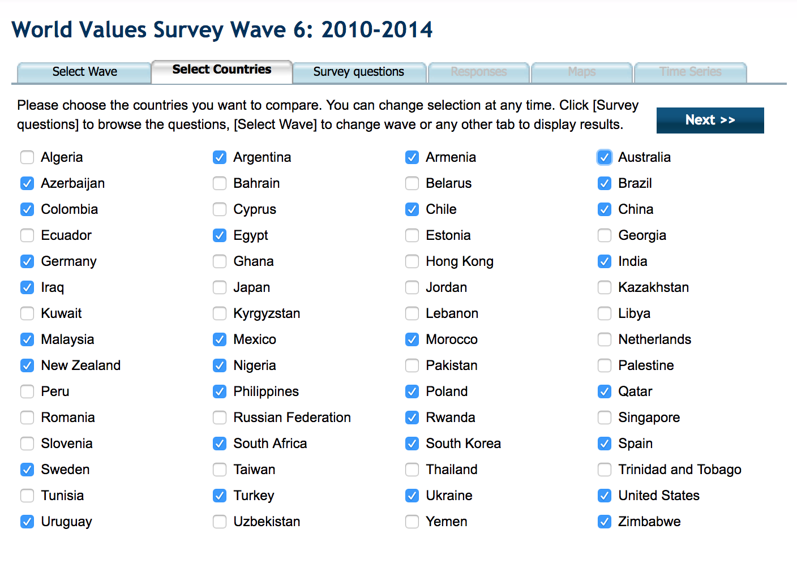

I started by looking at the WVS website and decided to investigate what the world thought was justifiable. I also wanted to see if that was correlated with the highest educational level in that country. My hypothesis was that countries with higher education level would think that e.g. homosexuality and abortion are justifiable. I randomly choose the countries as shown below for the latest wave (2010-2014).
mer text
Click here to see the visualization.